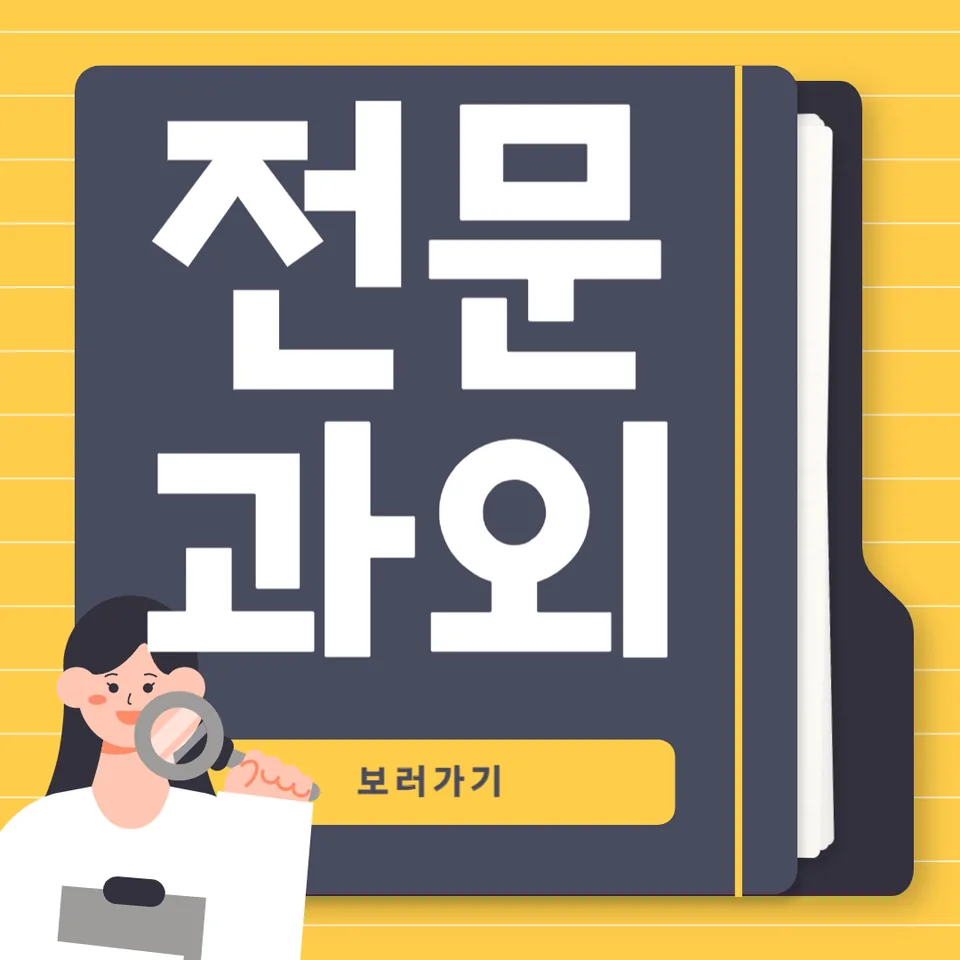

PageType : DONG
URL : /경기도과외/남양주시과외/와부읍과외/
지역 학습환경과 학생들의 변화
와부읍과외를 찾는 학생들은 “공부를 언제 시작해야 하는지”부터 막히는 경우가 많습니다. 수업을 시작하면 먼저 학습 동선이 달라져요. 집에서 책상에 앉는 시간이 늘고, 숙제 확인이 끝난 뒤에야 쉬는 흐름이 만들어지면서 생활 루틴이 고정됩니다. 같은 지역 환경이어도 학생마다 체감이 다른데, 와부읍과외에서는 학습 습관이 먼저 정리되면 성적 변화가 뒤따르는 패턴을 자주 봅니다.
특히 학교 일정이 촘촘해질수록 ‘수업 듣기’에 그치던 태도가 ‘복습-정리-다음 준비’로 전환됩니다. 학생이 스스로 “오늘 한 범위를 어디까지 했는지”를 말할 수 있게 되면, 시험 전날에 몰아서 외우는 비중이 줄고 실수가 눈에 띄게 감소합니다. 와부읍과외 과정에서 반복되는 성찰 질문은 단순한 훈계가 아니라, 학생이 자기 학습을 관찰하도록 돕는 방식이라 만족도가 높습니다.
학부모가 많이 고민하는 부분
학부모들은 대체로 두 가지를 걱정합니다. 첫째는 내신이 흔들릴 때 “어느 단원부터 막혔는지”를 알기 어렵다는 점이고, 둘째는 학생이 스스로 움직이지 않는다는 현실입니다. 와부읍과외 상담에서도 “시간은 많은데 결과가 없다”는 이야기가 자주 나옵니다. 이때 핵심은 공부 시간을 늘리는 게 아니라 공부의 형태를 바꾸는 것입니다.
학생이 같은 문제를 여러 번 틀리는 상황이라면, 대개 개념 이해가 늦게 정리되었거나 풀이 순서가 고정되지 않았던 경우가 많습니다. 와부읍과외에서는 틀린 문제를 모아 ‘다시 보는 기준’을 만들고, 매주 짧게라도 스스로 설명하게 하는 훈련을 넣습니다. 학부모 입장에서도 확인 지표가 생기니 불안이 줄어듭니다. 내신 준비가 시작되는 시점에는 “부족한 부분을 빨리 찾는 감각”이 성적을 좌우한다는 사실을 학부모가 가장 먼저 체감합니다.
학년이 올라갈수록 달라지는 공부
초기에는 이해가 더디더라도 진도를 따라가려는 학생이 많습니다. 그런데 중간고사와 기말고사가 이어지면, 이해가 늦었던 단원이 누적되며 시험 체력이 함께 떨어집니다. 와부읍과외는 학년 변화에 맞춰 전략을 조정합니다. 학년이 올라갈수록 단순 반복보다 ‘문제 유형을 읽는 방식’이 중요해지기 때문입니다.
고학년으로 갈수록 공부는 더 촘촘해집니다. 예를 들어 과목별로 시험 범위가 겹치지 않는 주가 오면, 학생은 “이 시기에 무엇을 먼저 처리해야 하는지”를 스스로 정리해야 합니다. 와부읍과외에서는 공부 계획을 과목의 우선순위와 난이도에 맞춰 나누고, 결과가 나오지 않는 날에도 다음 행동이 남도록 설계를 합니다. 그 과정에서 학생이 공부를 피하는 습관을 줄이고, 오히려 과제량을 ‘선택’할 수 있는 태도를 갖게 됩니다.
학교생활과 내신 준비
내신 준비는 교과서 진도만으로 끝나지 않습니다. 수업 중 필기 습관, 질문 타이밍, 수업 후 복습 속도가 모두 점수로 연결됩니다. 와부읍과외는 학교생활에서 생기는 작은 흔들림을 빠르게 잡는 쪽에 강점이 있습니다. 예컨대 수업에서 중요한 문장을 놓친 학생은 집에서 문제를 풀 때 같은 실수를 반복하는데, 이 흐름을 초반에 끊어야 합니다.
시험 기간이 다가오면 학생의 태도도 달라져요. 처음에는 “공부하긴 하는데 불안이 커진다”는 반응이 나오고, 그 다음엔 “어떤 유형에서 자꾸 틀리는지”가 말로 구체화됩니다. 와부읍과외에서는 이 단계에서 오답을 단순 모으는 데서 끝내지 않고, 내신 점수로 이어지는 방식으로 재구성합니다. 예습과 복습의 균형, 단원별 약점 체크, 서술형 대비가 한 흐름으로 이어지면 내신이 안정권에 들어옵니다.
자기주도학습이 중요한 이유
자기주도학습은 ‘혼자 공부하는 능력’처럼 보이지만 실제로는 ‘선택과 점검의 습관’에 가깝습니다. 와부읍과외에서 수업이 진행되는 동안 학생은 매일의 학습 목표를 짧게 세우고, 끝나면 왜 했는지와 어떤 부분이 남았는지 기록합니다. 이 과정이 반복되면, 숙제는 해도 이해가 없는 날을 구분하는 눈이 생깁니다.
또한 자기주도학습은 시간관리와 결합될 때 더 강해집니다. 방학이나 시험 직전에도 무작정 시간을 채우지 않고, 과목별로 필요한 집중 구간을 나눕니다. 와부읍과외에서는 “오늘 30분이면 되는가, 90분이 필요한가” 같은 현실적인 기준을 함께 잡아 줍니다. 학생이 스스로 말할 수 있을 때, 공부 습관은 흔들려도 다시 돌아올 수 있는 구조를 갖추게 됩니다.
공부 습관이 성적에 미치는 영향
성적은 재능보다 습관의 누적에서 갈리는 편입니다. 어떤 학생은 시간이 짧아도 복습을 꾸준히 하며 점수가 오르고, 또 어떤 학생은 오래 앉아 있어도 이해 확인이 없어서 점수가 멈춥니다. 와부읍과외에서는 공부습관을 ‘행동’으로 정의합니다. 예를 들면 문제를 풀고 난 뒤 정답 확인만 하는지, 틀린 이유를 한 문장으로 정리하는지, 다음에 같은 실수를 막기 위한 장치를 만드는지로 구분합니다.
시험 전에는 특히 습관의 차이가 드러납니다. 준비가 잘 된 학생은 하루를 시작할 때 오늘의 목표를 말하고, 끝에서는 내신 범위에서 남은 부분을 체크합니다. 반대로 습관이 정리되지 않은 학생은 시험 직전에야 범위를 다시 펼치느라 시간이 새고, 그 결과 불안이 커집니다. 와부읍과외는 이러한 흐름을 끊어, 공부 습관이 점수로 이어지게 만듭니다.
체크해야 할 학습 포인트
- 수업 직후 복습 시간을 고정하고, 오늘 한 범위를 한 문장으로 요약하는 습관
- 오답을 “정답 맞히기”가 아니라 “같은 실수 재발 방지” 관점으로 분류
- 내신 시험 대비 시 서술형·단답형의 요구 조건을 먼저 읽고 풀이 흐름 정리
- 시험 전 주간에 과목 우선순위를 정해 집중 구간을 나누는 시간관리 루틴
- 자기주도학습을 위해 매주 학습 계획과 실행 결과를 짧게 점검하기
자주 묻는 질문
와부읍과외는 내신 준비에만 집중하나요?
내신 비중을 기본으로 두되, 시험이 끝난 뒤에도 과목 이해가 남도록 복습 구조를 함께 만듭니다. 따라서 와부읍과외는 시험 직전만 몰아가는 방식이 아니라 학습을 이어가게 설계합니다.
공부를 싫어하는 학생도 변화할 수 있을까요?
가능합니다. 핵심은 억지로 시간을 늘리기보다, 학생이 “무엇을 했는지”를 바로 느끼게 만드는 체크 방식입니다. 와부읍과외에서는 성취가 보이는 단위를 작게 잡아 공부습관을 회복시키는 쪽으로 진행합니다.
시험 기간에는 어떤 방식으로 진행되나요?
시험 범위를 기준으로 학습 순서를 조정하고, 자주 틀리는 유형을 우선 정리합니다. 와부읍과외에서는 문제 풀이 시간을 늘리는 대신, 오답 패턴을 줄이는 목표로 움직입니다.
학생이 스스로 계획을 세우지 못하면 어떻게 하나요?
처음엔 계획을 함께 만들고, 점차 학생이 선택할 수 있게 바꿉니다. 와부읍과외의 자기주도학습은 계획-실행-점검을 반복하며 학생이 주도권을 잡도록 돕는 구조입니다.
수업을 계속하면 성적이 얼마나 안정될까요?
개인차는 있지만, 와부읍과외는 내신에서 흔히 발생하는 변동 요인을 줄이는 데 초점을 둡니다. 공부 습관과 복습 루틴이 잡히면 시험 때마다 흔들리는 폭이 줄어드는 경향이 있습니다.
